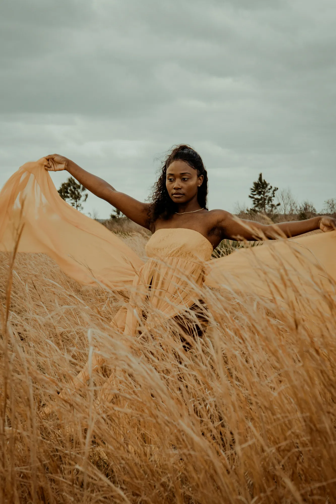
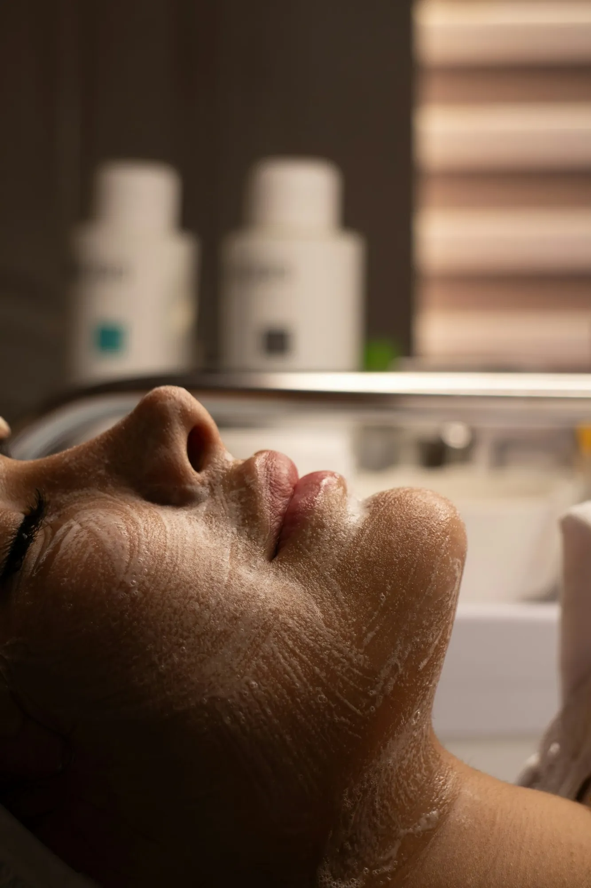
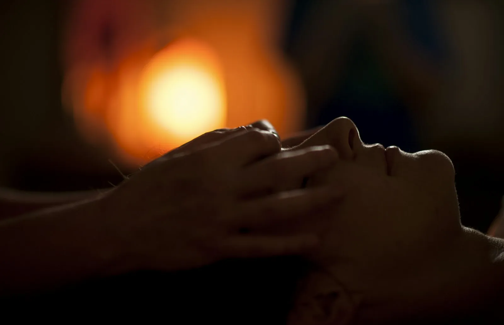
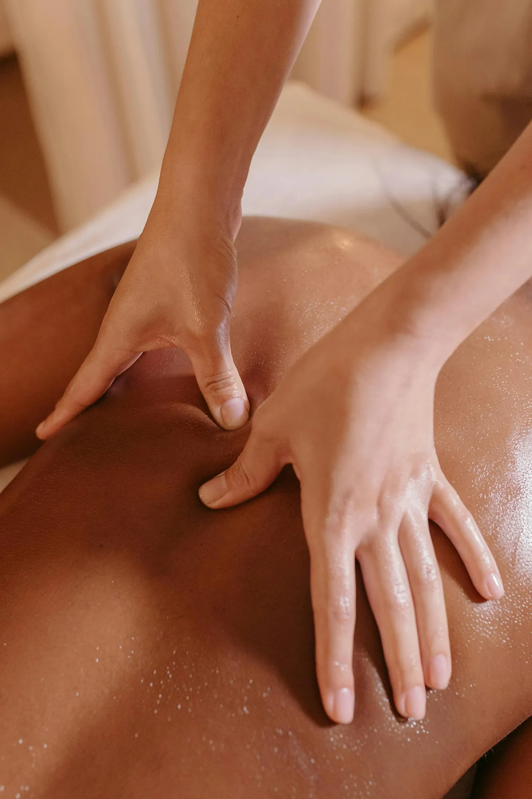

Pedicure
Voeten die weer licht aanvoelen
Kies voor de wellness pedicure met peeling, massage en pakking, of voor gespecialiseerde, medische voetverzorging als er iets meer aan de hand is.
- Wellness pedicure
- Medische voetverzorging
Gelaatsverzorging, massage, pedicure, ontharing en cryolipolyse, alles onder één dak. Je ligt bij Christiana zelf, die al sinds 2010 haar eigen zaak heeft en uitsluitend met Germaine de Capuccini werkt.


Elke behandeling start met een goeie reiniging en een blik op je huid van dat moment.
Elke huid vraagt iets anders, en dat verandert ook met het seizoen. Daarom kies je bij Christiana niet uit een standaardkaart, maar uit een paar duidelijke trajecten. Twijfel je? Begin met de First Time Facial, dan bekijken we samen wat je huid nodig heeft.
De perfecte start van je huidtraject. Je leert je huid kennen en krijgt meteen een verzorging op maat.
Een frisse, gezonde huid en een uur waarin je echt even tot rust komt.
Doelgericht werken aan je huid, zonder dat de ontspanning verloren gaat.
Een reeks van drie sessies voor wie een huidprobleem grondig wil aanpakken.
Een oppepper tussendoor, ideaal tussen twee grotere verzorgingen of voor een feest.
Zin in iets extra? Elke verzorging kan je uitbreiden met een luxe extraatje, zodat het een volledige wellnessbeurt wordt.
Masseren is samen met gelaatsverzorging waar Christiana het liefst mee bezig is. Of je nu vastzit in je nek van het bureauwerk of gewoon een uur weg wil van alles: er is een massage die erbij past.


Hardnekkig vet dat niet weg wil met sporten of opletten wat je eet? Met cryolipolyse wordt het vet plaatselijk bevroren. Zonder operatie en zonder hersteltijd: je gaat gewoon verder met je dag.
Je start altijd met een gratis intakegesprek. Daarin bekijken we samen of cryolipolyse iets voor jou is en hoeveel sessies zinvol zijn.
Plan je intakeKies voor de wellness pedicure met peeling, massage en pakking, of voor gespecialiseerde, medische voetverzorging als er iets meer aan de hand is.
Van een snelle bovenlip tot volledige benen. Ook voor borst en rug kan je hier gewoon terecht, zonder gedoe.
Masseren en gelaatsverzorging zijn mijn passie. En dat voel je meteen.
Ik ben Christiana en ik run Beautylounge Christiana sinds 2010. Ik werk resultaatgericht, maar zonder dat je je een nummer voelt. Je krijgt de tijd, ik luister naar wat je wil en ik zeg eerlijk wat je huid nodig heeft.
Voor de producten koos ik bewust voor Germaine de Capuccini. Zo weet ik wat er op je huid komt en kan je thuis met hetzelfde verder.
Christiana
43 klanten lieten een review achter op Google. Benieuwd wat ze schrijven? Lees ze gerust zelf.
Bekijk de reviewsEen cadeaubon koop je online en is een jaar geldig, voor nieuwe en vaste klanten.
Boek online wanneer het jou past, of stuur een berichtje als je eerst iets wil vragen.
| Maandag | 9u tot 17u |
| Dinsdag | 9u tot 22u |
| Woensdag | 9u tot 11u45 |
| Donderdag | 9u tot 22u |
| Vrijdag | 9u tot 17u |
| Zaterdag en zondag | gesloten |
Ik maakte deze demo voor jullie om te tonen wat er kan. Na een kort gesprek maak ik er iets veel persoonlijkers van, helemaal naar jullie wens.
Vrijblijvend. Ik kom langs of we bellen.
Op maat, op jullie eigen domein.
Geen voorschot. Jullie betalen pas als alles klaar is.
Hosting, domeinnaam en kleine wijzigingen, zoals nieuwe openingsuren.
Omdat een voorbeeld meer zegt dan een mail. Zo zien jullie meteen wat er kan, en het kost jullie niets.
Nee. Het gesprek is vrijblijvend. Vinden jullie het niks, dan is het daarmee gedaan.
Na ons gesprek staat jullie site binnen 10 tot 14 dagen online.
Zeker. Jullie domeinnaam kan gewoon blijven, de nieuwe site komt in de plaats van de oude.
Nee, dat doe ik op basis van ons gesprek. Eigen foto's zijn mooi meegenomen, maar niet nodig om te starten.